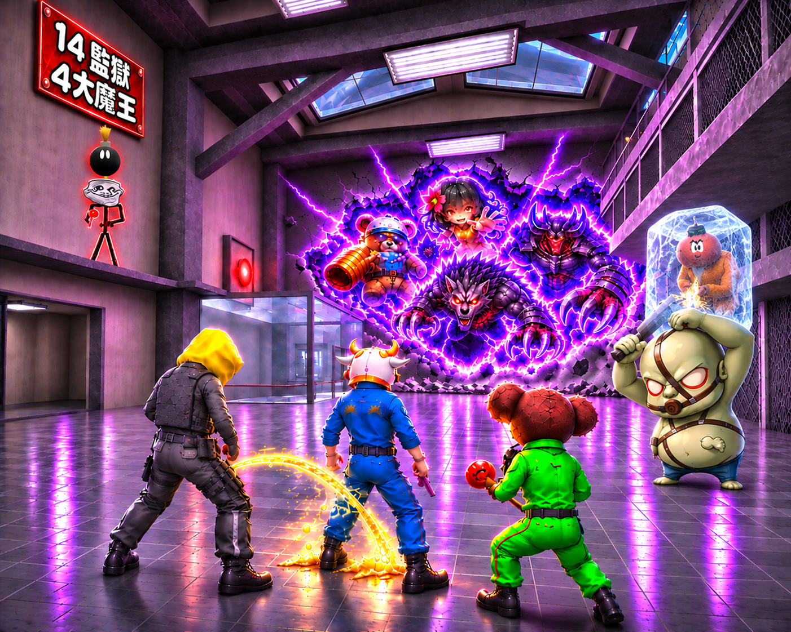

14 監獄
伺服器規章 · 陣營守則 · 常用指令說明
⚠️ 一個口令一個動作
|
無永久指令 ⚠️
🚫 伺服器核心禁令 (Server Bans)
嚴禁無理由大屠殺、偏袒、親友團
等不公正行為。
處罰：永久封鎖
嚴禁使用任何形式的 BUG、外掛或第三方作弊程式
。
處罰：永久封鎖
槍房界線機制：
過門判定：
因各類地圖設計不一（如門外設有補血機等設施），槍房範圍一律以「槍房界線」為準。
免罰緩衝：
囚犯只要未通過槍房大門，在門外活動（如使用門外的補血機）皆不算進入槍房。
雙腳判定：
雙腳進入到槍房內
才算過門，單腳踏過門不算進入槍房。
⚖️ 囚犯規則 (Prisoners)
通緝犯判定：
囚犯若投擲
手榴彈、煙霧彈、閃光彈、撿槍、掏出槍、進入槍房
之行為，一律視為通緝犯（此規則包含自由日玩家）。
自由日規範：
自由日玩家在限定時間內，可以無視任何典獄長的指令。
自由日於時間顯示
0:00
時準時結束，此後玩家變回一般囚犯。
🛡️ 獄警規則 (Guards)
硬體要求：
獄警陣營必須擁有麥克風。若無麥克風、麥克風損壞、爆音或講話不清楚者，請至囚犯陣營。
處罰：剔除 / 換隊
服從命令：
獄警必須聽從典獄長命令。若不聽話，典獄長可自行將其 TK（團隊擊殺）。
處罰：剔除 / 處死
牢門限制：
未得到典獄長命令前，獄警不得擅自開啟牢門。
處罰：剔除 / 處死
武器管制：
不得隨意丟棄槍枝（除非典獄長命令）。
處罰：剔除 / 處死
不得隨意投擲手榴彈、閃光彈、煙霧彈。
處罰：剔除 / 處死
自殺限制：
任何情況下皆不能自殺（除非典獄長允許或屬於意外身亡）。
處罰：剔除
誤殺懲罰：
不得隨意誤殺囚犯，或在無典獄長命令下殺死囚犯。
處罰：剔除 / 處死
誤殺 1 人：
必須在下一場給予該囚犯自由日一天，此補償不得累積。
處罰：剔除
誤殺 3 人（含）以上：
典獄長方必須在下一場給予全體囚犯自由日一天。
處罰：剔除
👑 典獄長 & 老大規則 (Warden & Leader)
輪流機制：
典獄長與老大請輪流擔任，嚴禁惡意霸佔位置（除非當下沒有其他玩家想當）。
處罰：剔除 / 處死
典獄長限制：
硬體與口條：
必須擁有清晰的麥克風。若講話速度過快（5速嘴）導致他人聽不懂，請勿擔任。
處罰：剔除 / 處死
開門時限：
遊戲時間
1分30秒
前必須開啟牢門。
系統：處死
死亡特權失效：
當典獄長死亡時，其下達的所有指令
立即宣告無效
，直到下一位典獄長上任並下達新指令。
特殊模式：
所有特殊模式須在
無自由日情況下
，或是
自由日時間到（0:00）
才可開啟。開啟特殊遊戲時
請通知囚犯
，請勿直接開啟導致囚犯沒做準備。
處罰：剔除 / 處死
囚犯老大限制：
硬體要求：
必須擁有麥克風，適用於指揮囚犯進行暴動。
處罰：剔除 / 處死
無自由日：
擔任老大者不享有自由日特權。
⌨️ 常用按鍵與指令設定
M 或是 F3
主選單
E 鍵
降落傘
V 鍵
尿尿
如需修改按鍵綁定（請按 ~ 開啟控制台輸入）：
• 修改尿尿按鍵（範例改為 X 鍵）：
bind x +piss
• 修改主選單按鍵（範例改為 F1 鍵）：
bind f1 jb_menu